📋 Общая информация
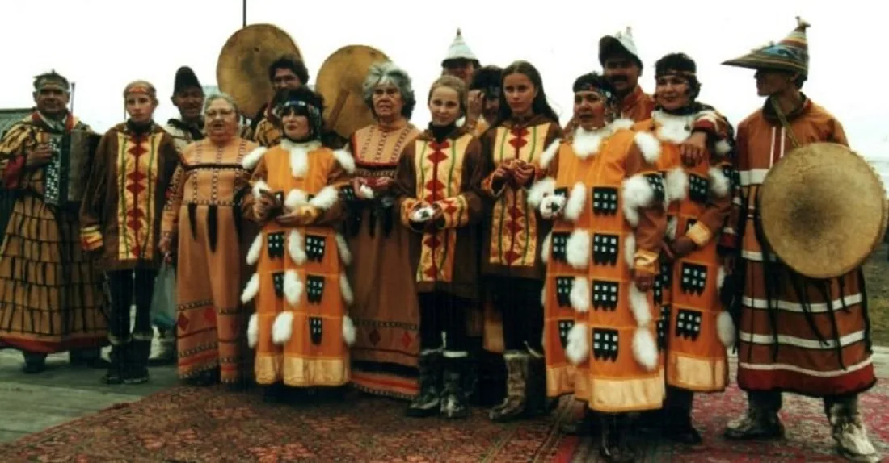
Численность
В России проживает около 400 алеутов. Все они живут на Командорских островах (остров Беринга, остров Медный). Название «унангax̂» означает «береговые люди».
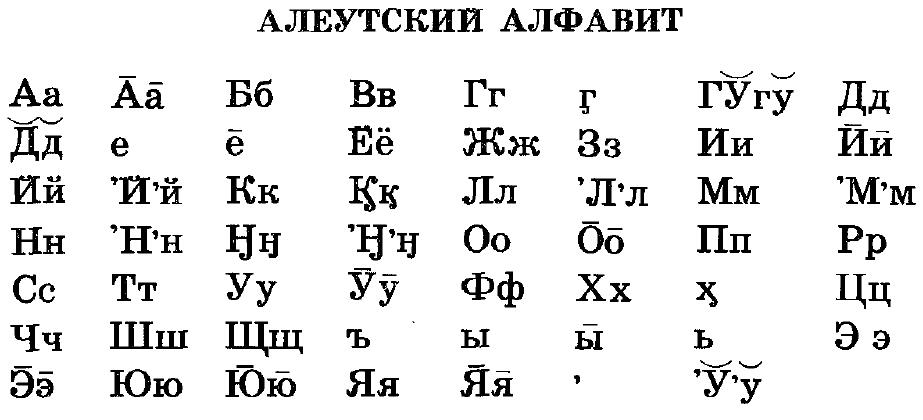
Язык
Алеутский язык относится к эскимосско-алеутской семье. Имеет сложную систему глаголов с множеством форм. В России практически утрачен, сохраняется на Аляске. Использовались кириллица и латиница.
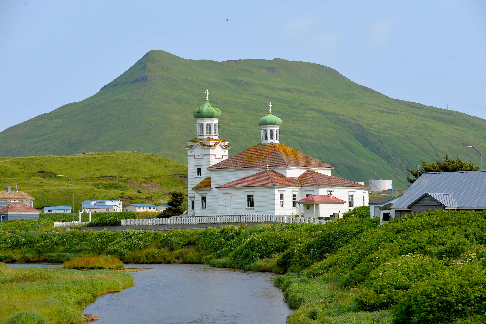
Религия
Традиционные верования — анимизм и культ предков. С XVIII века распространилось православие (святитель Иннокентий Вениаминов). Сохраняются элементы традиционных обрядов.
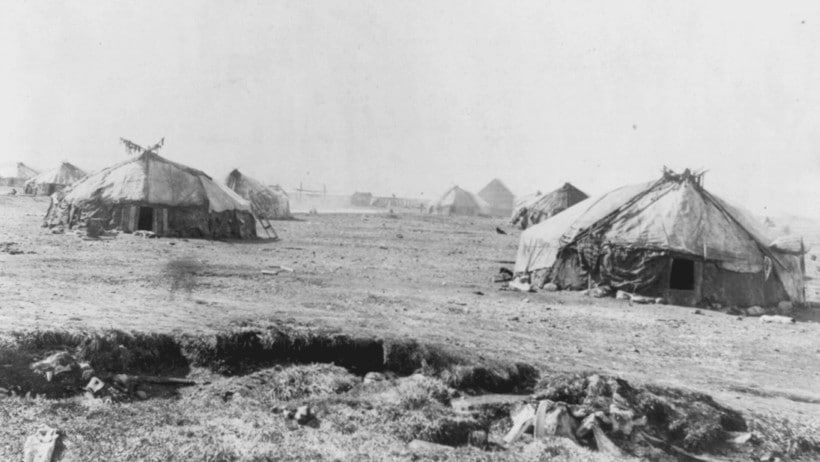
Расселение
Алеуты населяют Командорские острова в Беринговом море. Два основных острова — остров Беринга (село Никольское) и остров Медный. Крупнейшая диаспора — на Аляске (США).
🎭 Традиции и культура
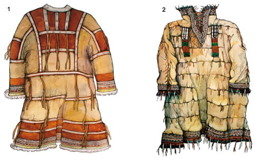
Национальный костюм
Костюм из шкур морских выдр, тюленей, птиц. Женщины носили длинное платье с капюшоном «камлейка», украшенное бисером и перьями. Мужчины — штаны и куртка из шкур.
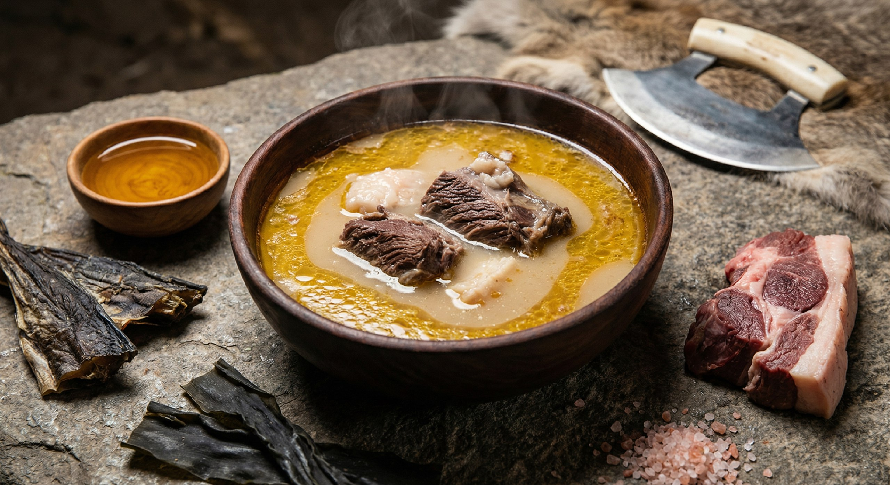
Кухня
Мясо морских выдр, тюленей, моржей, рыба (треска, палтус), яйца морских птиц, водоросли. Напиток «чагин» — бульон из морских животных. Сушёная и копчёная рыба.
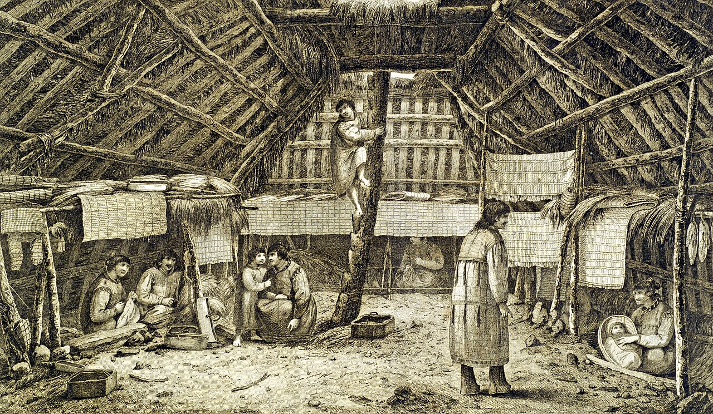
Жилище
«Барабара» — полуземлянка с каркасом из китовых рёбер и костей, покрытая дерном и шкурами. Вход через люк в крыше. Тёплое и укрытое от ветра жилище.
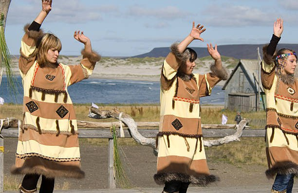
Ремёсла и искусство
Уникальное ткачество из травы «экамы» — шляпы и корзины, держащие воду. Резьба по кости, изготовление байдарок «бидарка». Традиционные охотничьи ловушки.
🎉 Народные праздники
-
Праздник морской выдры
Обряд благодарности после удачной охоты. Танцы, песни, угощения. Морская выдра — основной промысловый зверь.
-
Танцы и песни
Традиционные алеутские песни-рассказы (аягax̂) исполняются с барабаном. Танцы имитируют движения морских животных.
-
Преображение Господне
Главный православный праздник. Крестный ход вокруг церкви, освящение воды, народные гуляния.
-
День алеутской культуры
Праздник на Командорских островах. Мастер-классы по ткачеству из травы, выставки, фольклорные выступления.
📸 Галерея
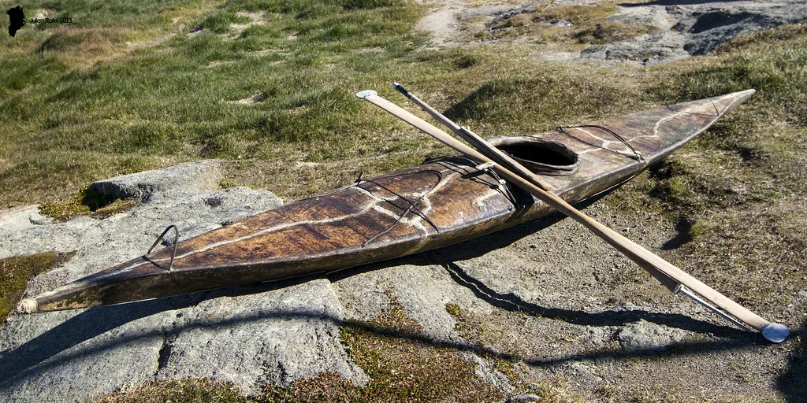
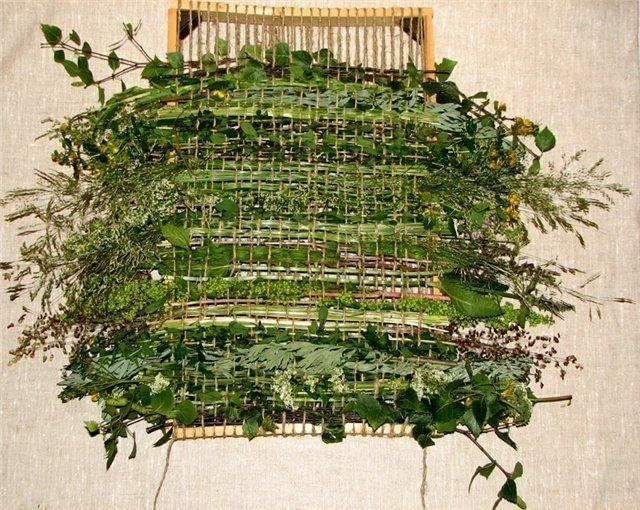
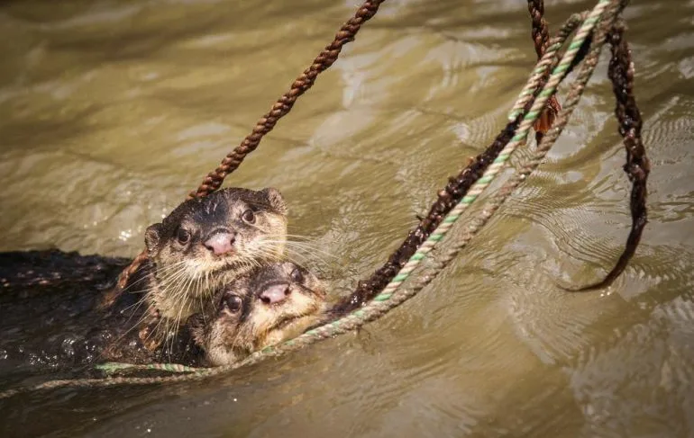
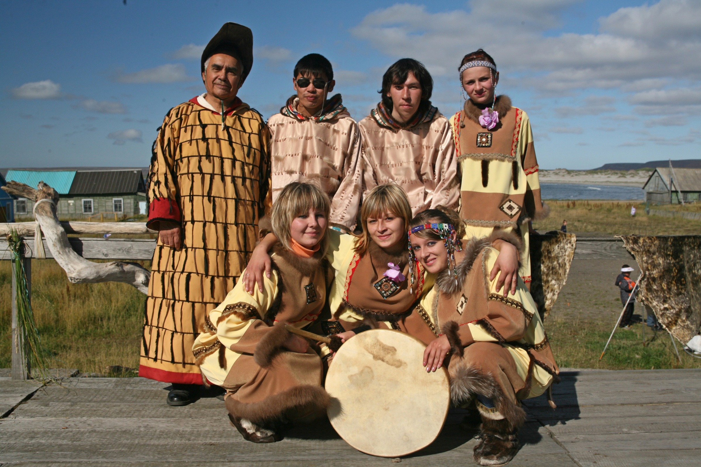
💡 Интересные факты
🦭 Морская выдра
Алеуты — мастера охоты на каланов (морских выдр). Шкуры выдр ценились на весь мир и стали причиной колонизации островов.
🌉 Разделение народа
В 1867 году после продажи Аляски алеуты оказались разделены между Россией и США. Связи между группами практически прервались.
🧺 Уникальное ткачество
Алеуты изготавливали шляпы и корзины из травы «экамы» настолько плотные, что держали воду. Это искусство возрождается сегодня.
🎯 Викторина: Насколько хорошо вы знаете культуру алеутов?
Ответьте на вопросы на основе информации с этой страницы.